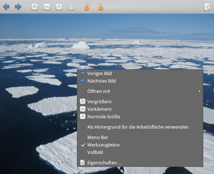
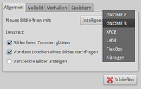

Viewnior
Dieser Artikel wurde für die folgenden Ubuntu-Versionen getestet:
Ubuntu 16.04 Xenial Xerus
Ubuntu 14.04 Trusty Tahr
Zum Verständnis dieses Artikels sind folgende Seiten hilfreich:
Viewnior  ist ein Bildbetrachter, der ähnlich wie GPicview, Mirage oder Ristretto eine möglichst schnelle Bildanzeige bei kleinstmöglichsten Ressourcenverbrauch bietet, jedoch keine Druckfunktion hat.
ist ein Bildbetrachter, der ähnlich wie GPicview, Mirage oder Ristretto eine möglichst schnelle Bildanzeige bei kleinstmöglichsten Ressourcenverbrauch bietet, jedoch keine Druckfunktion hat.
Angezeigt werden können die folgenden Grafikformate: BMP, GIF, JP2/JPC (JPEG-2000), JPG/JPEG, PBM/PGM/PNM/PPM, PCX, PNG, TIFF, ICO, XPM und SVG. Die Grafikbibliothek GTK dient als Grundlage der Programmoberfläche, wodurch sich die Anwendung gleichermaßen für GNOME, MATE, Xfce und LXDE eignet.
Installation¶
 Das Programm ist ab Ubuntu 14.10 in den offiziellen Paketquellen enthalten. Folgendes Paket muss installiert werden [1]:
Das Programm ist ab Ubuntu 14.10 in den offiziellen Paketquellen enthalten. Folgendes Paket muss installiert werden [1]:
viewnior (universe)
 mit apturl
mit apturl
Paketliste zum Kopieren:
sudo apt-get install viewnior
sudo aptitude install viewnior
PPA¶
Bei älteren Ubuntu-Versionen muss man auf ein "Personal Package Archiv" (PPA) [2] ausweichen.
Adresszeile zum Hinzufügen des PPAs:
ppa:desdelinux/viewnior
Hinweis!
Zusätzliche Fremdquellen können das System gefährden.
Ein PPA unterstützt nicht zwangsläufig alle Ubuntu-Versionen. Weitere Informationen sind der  PPA-Beschreibung des Eigentümers/Teams desdelinux zu entnehmen.
PPA-Beschreibung des Eigentümers/Teams desdelinux zu entnehmen.
Damit Pakete aus dem PPA genutzt werden können, müssen die Paketquellen neu eingelesen werden.
Nach dem Aktualisieren der Paketquellen erfolgt die Installation wie oben angegeben.
Benutzung¶

Nach der Installation erfolgt der Programmstart [3] bei Ubuntu-Varianten mit einem Anwendungsmenü über den Eintrag "Grafik -> Viewnior" oder den Befehl viewnior. Alternativ kann die Anwendung über das Kontextmenü eines Dateimanagers aufgerufen werden, wenn man eine unterstützte Bilddatei mit der rechten Maustaste  anklickt.
anklickt.
Viewnior startet in der Voreinstellung ohne sichtbare Menüzeile. Wer die Anzeige aus traditionellen Gründen bevorzugt, kann diese über das ganz rechte Symbol oder über das Kontextmenü sichtbar machen. Apropos rechte Maustaste: hierüber stehen die wichtigsten Programmfunktionen ebenfalls zur Verfügung. Als besonders praktisch sei hier der Punkt "Öffnen mit" genannt, mit dem man das gerade angezeigte Bild an ein Programm zur Bearbeitung übergeben kann. Ebenfalls nützlich: Die "Eigenschaften" zeigen nicht nur Dateigröße und Abmessungen, sondern auch einige ausgewählte Exif-Daten (sofern vorhanden).
Ansonsten stellen die vorhandenen Funktionen keine Überraschung dar und sind für einen Bildbetrachter völlig ausreichend. Wer dagegen eine Bildvorschau innerhalb eines Ordners (engl. "thumbnails") in Form einer Randspalte benötigt, sollte Mirage oder Ristretto ausprobieren.
Diaschau¶
Mit dem Menüeintrag "Ansicht -> Diaschau" oder der Taste F5 startet eine Diaschau im Vollbildmodus. Die Anzeigedauer (Standard: 5 Sekunden) kann in den Einstellungen geändert werden. Mit den Tasten F5 oder Esc wird die Diaschau wieder beendet, die sonst in Form einer Endlosschleife nach dem letzten wieder mit dem ersten Bild beginnt.
Einstellungen¶
 Die über die Tastenkombination Alt + B + E oder den Menüpunkt "Bearbeiten -> Einstellungen" erreichbare Konfiguration des Programms ist in weiten Teilen eine Geschmacksfrage. Dem Punkt "Allgemein -> Desktop" sollte man dagegen mehr Aufmerksamkeit widmen und auf die jeweils verwendete Desktop-Umgebung setzen, damit die Funktion "Bild -> Als Hintergrund für die Arbeitsfläche verwenden" korrekt funktioniert. Die vorgenommenen Einstellungen werden im Ordner ~/.config/viewnior/ im Homeverzeichnis gespeichert.
Tastenkürzel¶
| Tastenkürzel | |
| Taste(n) | Beschreibung |
| Strg + O | Bild öffnen |
| Strg + F | Ordner öffnen |
| → , ↓ | Nächstes Bild |
| ← , ↑ | Vorheriges Bild |
| Strg + + | Vergrößern |
| Strg + - | Verkleinern |
| Strg + 0 | Normale Größe |
| Strg + R | Bild (in 90° Grad-Schritten) nach rechts drehen |
| ⇧ + Strg + R | Bild (in 90° Grad-Schritten) nach links drehen |
| F5 | Diaschau an/aus |
| F11 | Vollbildmodus an/aus |
| Strg + F8 | Aktuelles Bild als Desktop-Hintergrund verwenden |
| Strg + W | Schließen |
| Strg + Q | Programm beenden |
 Übersichtsartikel
Übersichtsartikel- Erstellt mit Inyoka
-
 2004 – 2017 ubuntuusers.de • Einige Rechte vorbehalten
2004 – 2017 ubuntuusers.de • Einige Rechte vorbehalten
Lizenz • Kontakt • Datenschutz • Impressum • Serverstatus -
Serverhousing gespendet von